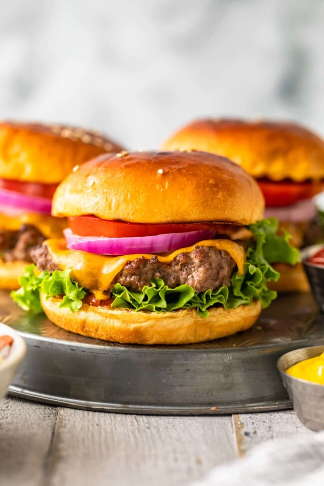
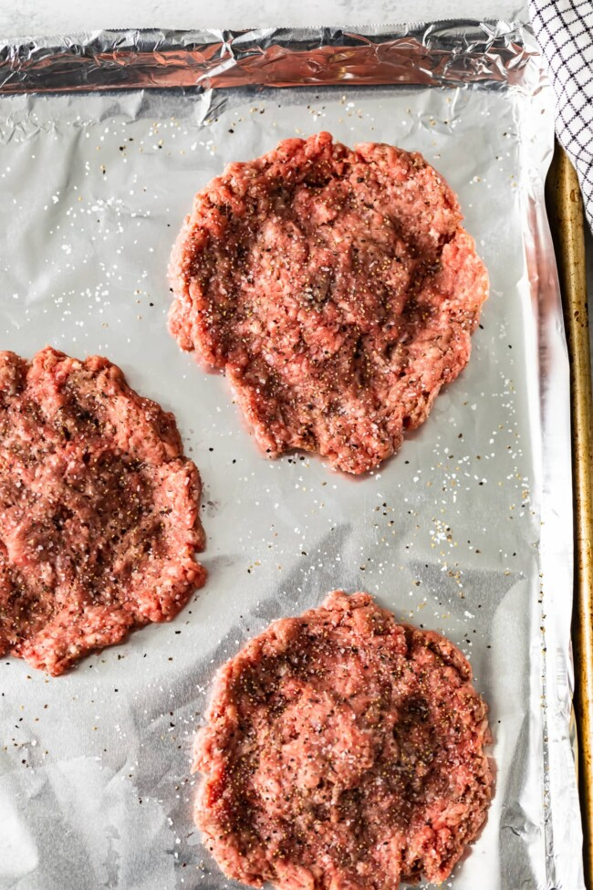

Oven Broiled Burgers

Description
All hail the Baked Bacon Ranch Chicken! You guys made yourselves loud and clear when I posted our 4 Ingredient Creamy Caesar Chicken.
It quickly rose to one of the most popular recipes on The Cookie Rookie within weeks of when I published. I knew I had to think of some other easy options that were similar but with different flavors, and this Ranch Baked Chicken with Bacon was formed!
p>
- 28 ounces freshly ground beef (preferably the Blue Label Burger Blend; ground chuck will do)
Kosher salt and freshly ground black pepper
- 4 slices cheese (I recommend American or cheddar)
- 4 soft hamburger buns, lightly toasted
- Kosher salt
- Toppings and condiments as desired
Steps
- Preheat broiler to high
- Divide meat into four equal 7-ounce portions and gently shape each one into a patty 4.5-inches wide by approximately 3/4-inch thick.
- Place patties on foil-lined broiler pan and position so that tops of patties are 2 1/2 to 3 inches below the broiler elements or flame.
- Broil for 3 minutes until top is well browned and begging to char.
- Flip patties and continue to broil until center reads 130 degrees on an instant read thermometer for medium-rare, about 3 minutes longer. Adjust cooking time if you want them more or less cooked.
- Top each patty with a slice of cheese, place back under broiler for 25 seconds to melt, place on buns, top as desired, and serve.
- Enjoy!